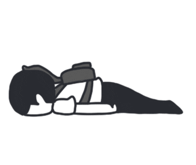

|
We can only assume that people are lazy might be because they lack
self-esteem because they always think that
they'll fail, lack discipline since they don't
really try to make a difference, lack of
positive recognition whenever they do make a
change or lack of interest on certain things
because they bore them or don't really care what happens.
There is a slim chance that people who are lazy are born
ridiculously rich that they don't need to do anything besides
fooling around with a lot of money.
Other people may also be the one to blame for their laziness.
Possibly because someone are doing all their chores for them
stealing their growth potential thus making them reliant on ohers.

|
-
Decline in Productivity
-
Productivity would be the most affected by laziness, when a
person is not motivated to make an action, it would be
difficult and time consuming to finish a task.
-
Missed Opportunities
-
If a person is lazy, he/she would most likely miss an
opportunity whether it is personal or professional. You
would certainly not have a love life if you wouldn't make an
effort and try to ask someone out or atleast talk to them.
Achieving your dreams is out of the picture without pursuing
it.
-
Health and Fitness
-
If you are lazy like the creator of this blog, then you'll
find yourself not in the best shape and health of your life.
Unless it is caused by an illness or disability then it's
not counted as laziness.
-
Damaged Relationships
-
Laziness can put a strain on your relationship with your
family, friends and partner. Failing to provide your
commitment and responsibility on the relationship will make
you seen as unreliable and undesirable.
-
Low Self-Esteem
-
Consistent failure to do something will destroy your
self-confidence. You'll start to doubt yourself, question
your worth and procrastinate your every move.
|